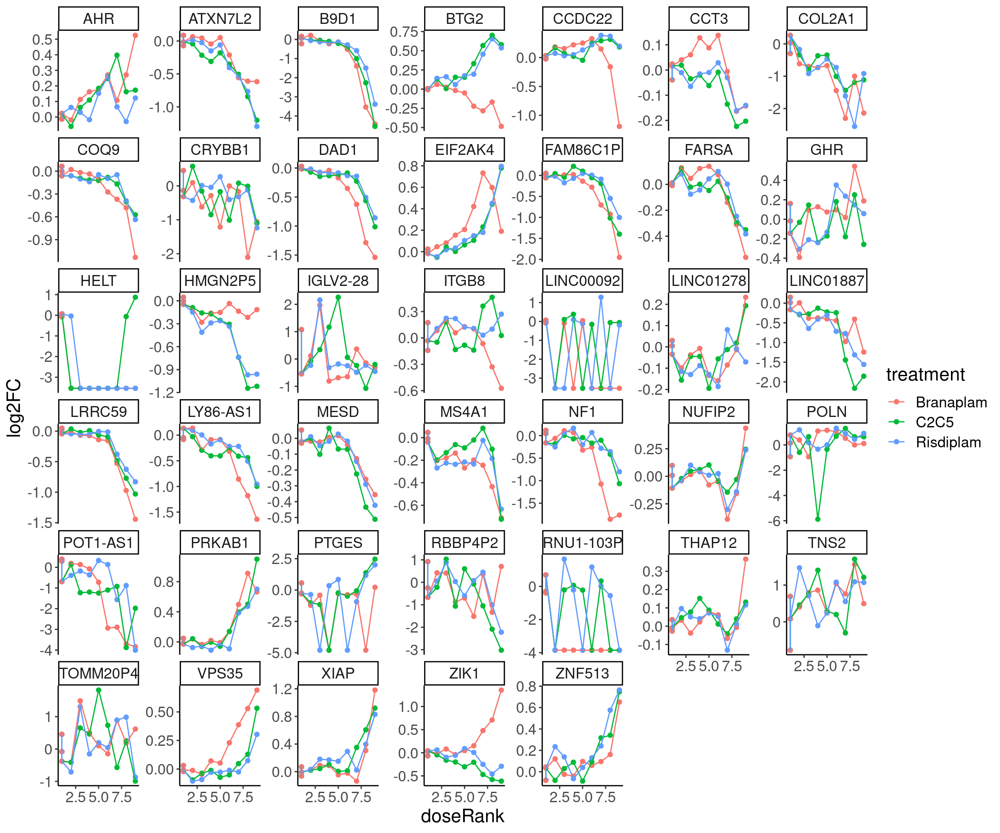

2023-10-26_ExploreDrmModels
2023-10-26
Last updated: 2023-10-26
Checks: 6 1
Knit directory:
20211209_JingxinRNAseq/analysis/
This reproducible R Markdown analysis was created with workflowr (version 1.7.0). The Checks tab describes the reproducibility checks that were applied when the results were created. The Past versions tab lists the development history.
The R Markdown file has unstaged changes. To know which version of
the R Markdown file created these results, you’ll want to first commit
it to the Git repo. If you’re still working on the analysis, you can
ignore this warning. When you’re finished, you can run
wflow_publish to commit the R Markdown file and build the
HTML.
Great job! The global environment was empty. Objects defined in the global environment can affect the analysis in your R Markdown file in unknown ways. For reproduciblity it’s best to always run the code in an empty environment.
The command set.seed(19900924) was run prior to running
the code in the R Markdown file. Setting a seed ensures that any results
that rely on randomness, e.g. subsampling or permutations, are
reproducible.
Great job! Recording the operating system, R version, and package versions is critical for reproducibility.
Nice! There were no cached chunks for this analysis, so you can be confident that you successfully produced the results during this run.
Great job! Using relative paths to the files within your workflowr project makes it easier to run your code on other machines.
Great! You are using Git for version control. Tracking code development and connecting the code version to the results is critical for reproducibility.
The results in this page were generated with repository version b3b009e. See the Past versions tab to see a history of the changes made to the R Markdown and HTML files.
Note that you need to be careful to ensure that all relevant files for
the analysis have been committed to Git prior to generating the results
(you can use wflow_publish or
wflow_git_commit). workflowr only checks the R Markdown
file, but you know if there are other scripts or data files that it
depends on. Below is the status of the Git repository when the results
were generated:
Ignored files:
Ignored: .DS_Store
Ignored: .Rhistory
Ignored: .Rproj.user/
Ignored: analysis/.RData
Ignored: analysis/.Rhistory
Ignored: analysis/20220707_TitrationSeries_DE_testing.nb.html
Ignored: code/.DS_Store
Ignored: code/._DOCK7.pdf
Ignored: code/._DOCK7_DMSO1.pdf
Ignored: code/._DOCK7_SM2_1.pdf
Ignored: code/._FKTN_DMSO_1.pdf
Ignored: code/._FKTN_SM2_1.pdf
Ignored: code/._MAPT.pdf
Ignored: code/._PKD1_DMSO_1.pdf
Ignored: code/._PKD1_SM2_1.pdf
Ignored: code/.snakemake/
Ignored: code/1KG_HighCoverageCalls.samplelist.txt
Ignored: code/5ssSeqs.tab
Ignored: code/Alignments/
Ignored: code/Branaplam_Risdiplam_specific_introns.bed.gz
Ignored: code/Branaplam_Risdiplam_specific_introns.bed.gz.tbi
Ignored: code/ChemCLIP/
Ignored: code/ClinVar/
Ignored: code/DE_testing/
Ignored: code/DE_tests.mat.counts.gz
Ignored: code/DE_tests.txt.gz
Ignored: code/DataNotToCommit/
Ignored: code/DonorMotifSearches/
Ignored: code/DoseResponseData/
Ignored: code/Fastq/
Ignored: code/FastqFastp/
Ignored: code/FivePrimeSpliceSites.txt
Ignored: code/FragLenths/
Ignored: code/Ishigami/
Ignored: code/Meme/
Ignored: code/Multiqc/
Ignored: code/OMIM/
Ignored: code/OldBigWigs/
Ignored: code/PhyloP/
Ignored: code/QC/
Ignored: code/ReferenceGenomes/
Ignored: code/Rplots.pdf
Ignored: code/Session.vim
Ignored: code/Session2.vim
Ignored: code/SplicingAnalysis/
Ignored: code/TracksSession
Ignored: code/bigwigs/
Ignored: code/featureCounts/
Ignored: code/figs/
Ignored: code/fimo_out/
Ignored: code/geena/
Ignored: code/hg38ToMm39.over.chain.gz
Ignored: code/igv_session.template.xml
Ignored: code/igv_session.xml
Ignored: code/log
Ignored: code/logs/
Ignored: code/rstudio-server.job
Ignored: code/rules/.RNASeqProcessing.smk.swp
Ignored: code/scratch/
Ignored: code/test.txt.gz
Ignored: code/testPlottingWithMyScript.ForJingxin.sh
Ignored: code/testPlottingWithMyScript.ForJingxin2.sh
Ignored: code/testPlottingWithMyScript.ForJingxin3.sh
Ignored: code/testPlottingWithMyScript.ForJingxin4.sh
Ignored: code/testPlottingWithMyScript.sh
Ignored: code/tracks.with_chRNA.RisdiBrana.xml
Ignored: code/tracks.with_chRNA.RisdiBranaWithExtras.xml
Ignored: code/tracks.xml
Ignored: data/~$52CompoundsTempPlateLayoutForPipettingConvenience.xlsx
Unstaged changes:
Modified: analysis/2023-10-26_ExploreDrmModels.Rmd
Modified: code/scripts/GenometracksByGenotype
Note that any generated files, e.g. HTML, png, CSS, etc., are not included in this status report because it is ok for generated content to have uncommitted changes.
These are the previous versions of the repository in which changes were
made to the R Markdown
(analysis/2023-10-26_ExploreDrmModels.Rmd) and HTML
(docs/2023-10-26_ExploreDrmModels.html) files. If you’ve
configured a remote Git repository (see ?wflow_git_remote),
click on the hyperlinks in the table below to view the files as they
were in that past version.
| File | Version | Author | Date | Message |
|---|---|---|---|---|
| Rmd | b3b009e | Benjmain Fair | 2023-10-26 | lots of updates |
| html | b3b009e | Benjmain Fair | 2023-10-26 | lots of updates |
Load libs
library(tidyverse)
library(RColorBrewer)
library(data.table)
library(drc)
library(ggrepel)
theme_set(
theme_classic() +
theme(text=element_text(size=16, family="Helvetica")))Intro
There are many ways to fit models with drc::drm… See this
tutorial…
I have noticed some funny things, in that depending on exactly how
you call the drm function, the lower and upper limits
estimates are sometimes switched (with corresponding sign change in
slope parameter), and sometimes you get wildly different estimates… I
kind of know what I am looking for inuitively, and I think I have an
idea of how exactly I want to call drm to fit dose response
curves to gene expression. I’m going to demonstrate some of these
nuances here… But first for some terminology…. the 4 parameter log
logistic model has for parameters: b, c, d, and e…
- b is the “slope” parameter
- c is the lower limit parameter. This may correspond to the limit when dose=0, or the limit when dose=Infinity.
- d is the upper limit parameter. Again, this is just the “other” limit compared to c… The same model can be specificied by swapping c and d, and also changing the sign of b
- e is the ED50 parameter.
When I fit dose response curves to gene expression, I figured the following details would make the model most useful and easily interpretable:
Response is in units of log2FC relative to DMSO… So I will use the \(log2CPM_d - mean(log2CPM_{DMSO})\) as the response metric (where \(log2CPM_d\) denotes the log2 CountsPerMillion for a gene at dose \(d\)). Thus, one of the limit parameters should be fixed at 0. For best modelling, it makes sense to limit parameters when reasonable, so I will also fit each treatment simultaneously such that I can limit the other limit parameter to be the same amongst all 3 treatments. The ED50 and slope parameter can freely vary between treatments, as I want to capture examples like HTT manual/eyeball interpretation of the dose response data looks like the slope is similar between all three treatments, but the ED50 is shifted. And in the HSD17B4 example, the slope looks clearly different between treatments, and the underlying reason makes sense (in that at the splicing level, there are either 2 or 1 poison exons depending on the treatment, and the gene expression response is logically sort of like the complement of the product of the poison exon dose response curves). Also, for simplicity/interpretability, rather than use the actual nanomolar dose for each treatment, I will rescale the doses of branaplam and C2C5 to be in units that are roughly functionally equivalent to the nanomolar dose for risdiplam. For example, since C2C5 is about 10x more potent than risdiplam, I will use 10*nanomolarDose for C2C5.
Analysis
Below, I will use some example data and show what happens when I try to fit these models different ways. In theory, a lot of these models should converge to the same thing, but for whatever reason they don’t.
f_in <-"../code/DoseResponseData/LCL/TidyExpressionDoseData_logFCTransformedAndAllDMSORepsInEachSeries.txt.gz"
sample_n_of <- function(data, size, ...) {
dots <- quos(...)
group_ids <- data %>%
group_by(!!! dots) %>%
group_indices()
sampled_groups <- sample(unique(group_ids), size)
data %>%
filter(group_ids %in% sampled_groups)
}
expression.dat <- fread(f_in) %>%
group_by(treatment) %>%
mutate(doseRank = dense_rank(dose.nM)) %>%
ungroup() %>%
as_tibble() %>%
mutate(doseInRisdiscale = case_when(
treatment == "C2C5" ~ dose.nM * 10,
treatment == "Branaplam" ~ dose.nM * sqrt(10),
TRUE ~ dose.nM
))
expression.dat %>%
distinct(doseInRisdiscale, treatment)# A tibble: 27 × 2
treatment doseInRisdiscale
<chr> <dbl>
1 Branaplam 9993.
2 Branaplam 3162.
3 Branaplam 999.
4 Branaplam 316.
5 Branaplam 99.9
6 Branaplam 31.6
7 Branaplam 9.99
8 Branaplam 3.16
9 C2C5 10000
10 C2C5 3160
# … with 17 more rowsPlot dose response data for some genes of intrest
GenesToHighlight <- c("STAT1", "HTT", "MYB", "TRIM11", "TRAFD1", "VEGFA", "FBXW11", "HSD17B4")
expression.dat %>%
mutate(treatment = factor(treatment)) %>%
filter(hgnc_symbol %in% GenesToHighlight) %>%
ggplot(aes(x=doseInRisdiscale, y=log2FC, color=treatment)) +
geom_point() +
geom_line() +
scale_x_continuous(trans="log1p", breaks=c(10000, 1000, 100, 10, 0), labels=c("10K", "1K", "100", "10", "0")) +
facet_wrap(~hgnc_symbol, scale="free_y")
| Version | Author | Date |
|---|---|---|
| b3b009e | Benjmain Fair | 2023-10-26 |
Now fit models for each of these in three ways, which should all in effect be identical:
for (gene in GenesToHighlight){
print("#######################################################################")
data <- expression.dat %>%
mutate(treatment = factor(treatment)) %>%
filter(hgnc_symbol == gene)
print(paste("Fitting", gene, "model with LL.4, fix upper limit"))
tryCatch(expr={
fit.LL.4.Fixed.d <- drm(formula = log2FC ~ doseInRisdiscale,
data = data,
fct = LL.4(names=c("Steepness", "LowerLimit", "UpperLimit", "ED50"), fixed=c(NA,NA,0,NA)),
curveid = treatment,
pmodels=data.frame(treatment, 1, treatment, treatment),
robust = "mean")
message("Successfully fitted model:")
plot(fit.LL.4.Fixed.d)
summary(fit.LL.4.Fixed.d)
},
error=function(e){
cat("ERROR:", gene, " model LL.4 fixed upper limit\n", conditionMessage(e), "\n")
}
)
print(paste("Fitting", gene, "model with LL.4, fix lower limit"))
tryCatch(expr={
fit.LL.4.Fixed.c <- drm(formula = log2FC ~ doseInRisdiscale,
data = data,
fct = LL.4(names=c("Steepness", "LowerLimit", "UpperLimit", "ED50"), fixed=c(NA,0,NA,NA)),
curveid = treatment,
pmodels=data.frame(treatment, treatment, 1, treatment),
robust = "mean")
message("Successfully fitted model.")
plot(fit.LL.4.Fixed.c)
summary(fit.LL.4.Fixed.c)
},
error=function(e){
cat("ERROR:", gene, " model LL.4 fixed lower limit\n", conditionMessage(e), "\n")
}
)
print(paste("Fitting", gene, "model with LL.3"))
tryCatch(expr={
fit.LL.3 <- drm(formula = log2FC ~ doseInRisdiscale,
data = data,
fct = LL.3(names=c("Steepness", "UpperLimit", "ED50"), fixed=c(NA,NA,NA)),
curveid = treatment,
pmodels=data.frame(treatment, 1, treatment),
robust = "mean")
message("Successfully fitted model.")
plot(fit.LL.3)
summary(fit.LL.3)
},
error=function(e){
cat("ERROR:", gene, " model LL.3\n", conditionMessage(e), "\n")
}
)
}[1] "#######################################################################"
[1] "Fitting STAT1 model with LL.4, fix upper limit"
| Version | Author | Date |
|---|---|---|
| b3b009e | Benjmain Fair | 2023-10-26 |
[1] "Fitting STAT1 model with LL.4, fix lower limit"
Error in optim(startVec, opfct, hessian = TRUE, method = optMethod, control = list(maxit = maxIt, :
non-finite finite-difference value [7]
ERROR: STAT1 model LL.4 fixed lower limit
Convergence failed
[1] "Fitting STAT1 model with LL.3"
| Version | Author | Date |
|---|---|---|
| b3b009e | Benjmain Fair | 2023-10-26 |
[1] "#######################################################################"
[1] "Fitting HTT model with LL.4, fix upper limit"
| Version | Author | Date |
|---|---|---|
| b3b009e | Benjmain Fair | 2023-10-26 |
[1] "Fitting HTT model with LL.4, fix lower limit"
| Version | Author | Date |
|---|---|---|
| b3b009e | Benjmain Fair | 2023-10-26 |
[1] "Fitting HTT model with LL.3"
| Version | Author | Date |
|---|---|---|
| b3b009e | Benjmain Fair | 2023-10-26 |
[1] "#######################################################################"
[1] "Fitting MYB model with LL.4, fix upper limit"
| Version | Author | Date |
|---|---|---|
| b3b009e | Benjmain Fair | 2023-10-26 |
[1] "Fitting MYB model with LL.4, fix lower limit"
Error in optim(startVec, opfct, hessian = TRUE, method = optMethod, control = list(maxit = maxIt, :
non-finite finite-difference value [7]
ERROR: MYB model LL.4 fixed lower limit
Convergence failed
[1] "Fitting MYB model with LL.3"
| Version | Author | Date |
|---|---|---|
| b3b009e | Benjmain Fair | 2023-10-26 |
[1] "#######################################################################"
[1] "Fitting TRIM11 model with LL.4, fix upper limit"
| Version | Author | Date |
|---|---|---|
| b3b009e | Benjmain Fair | 2023-10-26 |
[1] "Fitting TRIM11 model with LL.4, fix lower limit"
| Version | Author | Date |
|---|---|---|
| b3b009e | Benjmain Fair | 2023-10-26 |
[1] "Fitting TRIM11 model with LL.3"
| Version | Author | Date |
|---|---|---|
| b3b009e | Benjmain Fair | 2023-10-26 |
[1] "#######################################################################"
[1] "Fitting TRAFD1 model with LL.4, fix upper limit"
| Version | Author | Date |
|---|---|---|
| b3b009e | Benjmain Fair | 2023-10-26 |
[1] "Fitting TRAFD1 model with LL.4, fix lower limit"
| Version | Author | Date |
|---|---|---|
| b3b009e | Benjmain Fair | 2023-10-26 |
[1] "Fitting TRAFD1 model with LL.3"
| Version | Author | Date |
|---|---|---|
| b3b009e | Benjmain Fair | 2023-10-26 |
[1] "#######################################################################"
[1] "Fitting VEGFA model with LL.4, fix upper limit"
| Version | Author | Date |
|---|---|---|
| b3b009e | Benjmain Fair | 2023-10-26 |
[1] "Fitting VEGFA model with LL.4, fix lower limit"
| Version | Author | Date |
|---|---|---|
| b3b009e | Benjmain Fair | 2023-10-26 |
[1] "Fitting VEGFA model with LL.3"
| Version | Author | Date |
|---|---|---|
| b3b009e | Benjmain Fair | 2023-10-26 |
[1] "#######################################################################"
[1] "Fitting FBXW11 model with LL.4, fix upper limit"
| Version | Author | Date |
|---|---|---|
| b3b009e | Benjmain Fair | 2023-10-26 |
[1] "Fitting FBXW11 model with LL.4, fix lower limit"
| Version | Author | Date |
|---|---|---|
| b3b009e | Benjmain Fair | 2023-10-26 |
[1] "Fitting FBXW11 model with LL.3"
| Version | Author | Date |
|---|---|---|
| b3b009e | Benjmain Fair | 2023-10-26 |
[1] "#######################################################################"
[1] "Fitting HSD17B4 model with LL.4, fix upper limit"
| Version | Author | Date |
|---|---|---|
| b3b009e | Benjmain Fair | 2023-10-26 |
[1] "Fitting HSD17B4 model with LL.4, fix lower limit"
Error in optim(startVec, opfct, hessian = TRUE, method = optMethod, control = list(maxit = maxIt, :
non-finite finite-difference value [7]
ERROR: HSD17B4 model LL.4 fixed lower limit
Convergence failed
[1] "Fitting HSD17B4 model with LL.3"
| Version | Author | Date |
|---|---|---|
| b3b009e | Benjmain Fair | 2023-10-26 |
sessionInfo()R version 4.2.0 (2022-04-22)
Platform: x86_64-pc-linux-gnu (64-bit)
Running under: CentOS Linux 7 (Core)
Matrix products: default
BLAS/LAPACK: /software/openblas-0.3.13-el7-x86_64/lib/libopenblas_haswellp-r0.3.13.so
locale:
[1] LC_CTYPE=en_US.UTF-8 LC_NUMERIC=C LC_TIME=C
[4] LC_COLLATE=C LC_MONETARY=C LC_MESSAGES=C
[7] LC_PAPER=C LC_NAME=C LC_ADDRESS=C
[10] LC_TELEPHONE=C LC_MEASUREMENT=C LC_IDENTIFICATION=C
attached base packages:
[1] stats graphics grDevices utils datasets methods base
other attached packages:
[1] ggrepel_0.9.1 drc_3.0-1 MASS_7.3-56 data.table_1.14.2
[5] RColorBrewer_1.1-3 forcats_0.5.1 stringr_1.4.0 dplyr_1.0.9
[9] purrr_0.3.4 readr_2.1.2 tidyr_1.2.0 tibble_3.1.7
[13] ggplot2_3.3.6 tidyverse_1.3.1
loaded via a namespace (and not attached):
[1] fs_1.5.2 lubridate_1.8.0 httr_1.4.3 rprojroot_2.0.3
[5] tools_4.2.0 backports_1.4.1 bslib_0.3.1 utf8_1.2.2
[9] R6_2.5.1 DBI_1.1.2 colorspace_2.0-3 withr_2.5.0
[13] tidyselect_1.1.2 compiler_4.2.0 git2r_0.30.1 cli_3.3.0
[17] rvest_1.0.2 xml2_1.3.3 sandwich_3.0-1 labeling_0.4.2
[21] sass_0.4.1 scales_1.2.0 mvtnorm_1.1-3 digest_0.6.29
[25] rmarkdown_2.14 R.utils_2.11.0 pkgconfig_2.0.3 htmltools_0.5.2
[29] plotrix_3.8-2 highr_0.9 dbplyr_2.1.1 fastmap_1.1.0
[33] rlang_1.0.2 readxl_1.4.0 rstudioapi_0.13 farver_2.1.0
[37] jquerylib_0.1.4 generics_0.1.2 zoo_1.8-10 jsonlite_1.8.0
[41] gtools_3.9.2 R.oo_1.24.0 car_3.1-1 magrittr_2.0.3
[45] Matrix_1.5-3 Rcpp_1.0.8.3 munsell_0.5.0 fansi_1.0.3
[49] abind_1.4-5 R.methodsS3_1.8.1 lifecycle_1.0.1 stringi_1.7.6
[53] multcomp_1.4-19 whisker_0.4 yaml_2.3.5 carData_3.0-5
[57] grid_4.2.0 promises_1.2.0.1 crayon_1.5.1 lattice_0.20-45
[61] haven_2.5.0 splines_4.2.0 hms_1.1.1 knitr_1.39
[65] pillar_1.7.0 codetools_0.2-18 reprex_2.0.1 glue_1.6.2
[69] evaluate_0.15 modelr_0.1.8 vctrs_0.4.1 tzdb_0.3.0
[73] httpuv_1.6.5 cellranger_1.1.0 gtable_0.3.0 assertthat_0.2.1
[77] xfun_0.30 broom_0.8.0 later_1.3.0 survival_3.3-1
[81] workflowr_1.7.0 TH.data_1.1-1 ellipsis_0.3.2